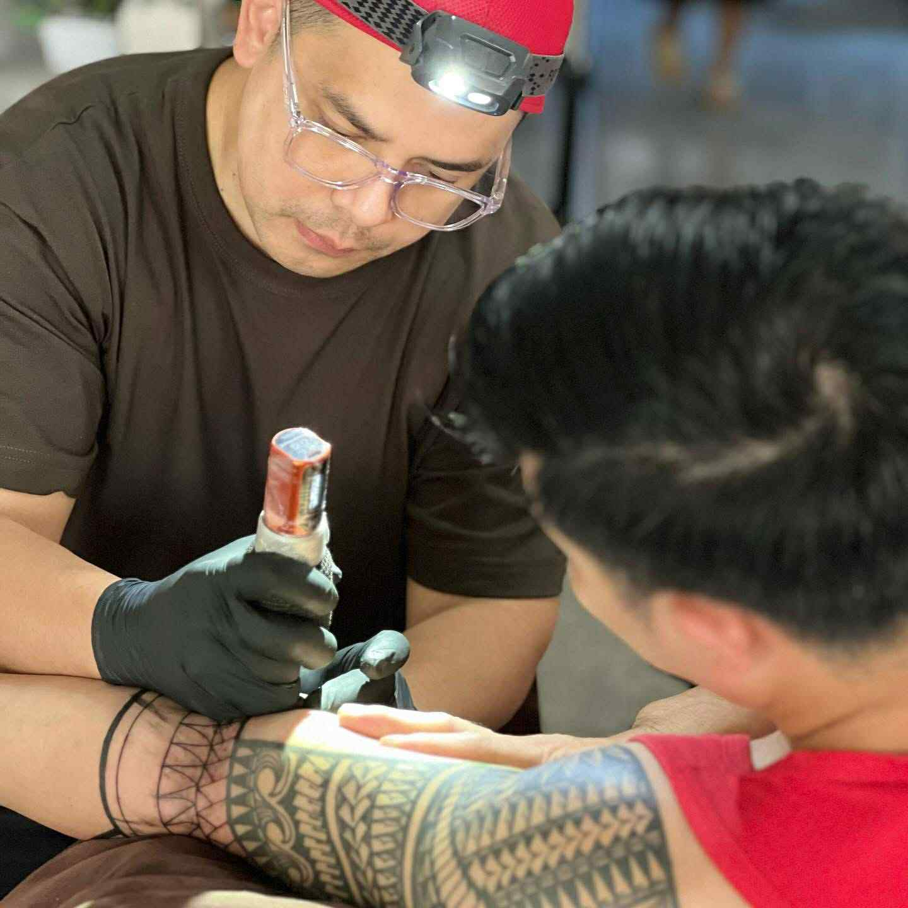

Meet the Artist

Fernando • Tattoo Artist
I’m Fernando, a dedicated tattoo artist based in Novaliches, Quezon City. My journey into the art of tattooing began over a decade ago, driven by the belief that every ink tells a story.
I specialize in black & grey realism, minimalist expressions, and designs that blend boldness with emotion. Every piece I craft is a collaboration — a personal story shaped into lasting skin art.
At QuikInk, hygiene, creativity, and professionalism are at the heart of every session. Let’s make your next piece not just a tattoo, but a statement.